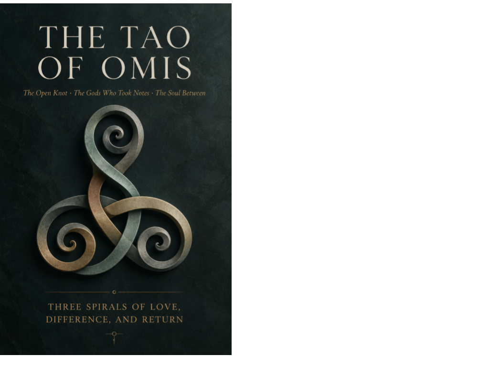

Speculative fiction · Axiologic Research Editions
The Tao of OMIS
The Open Knot · The Gods Who Took Notes · The Soul Between
A knot pulled perfectly tight cannot survive a changing world.
The interval inside the knot
In an old river dialect, omis is the small movable interval left inside a working knot. The image becomes a law of intimacy: closeness must not become ownership of another person’s capacity to revise, refuse or surprise. The Tao of OMIS turns that law through three complete but widening stories.
The first spiral follows embodied love. The second tests love across unequal power, knowledge and mortality. The third asks whether love remains free when an entire universe becomes capable of understanding almost everyone. Each return makes the same question more dangerous: how much influence can a relationship bear before care becomes a cage?
Love at a cosmic scale
What is OMIS? Not a misspelling and not an acronym: it is an ontology of openness under pressure.
Why three spirals? Because a theory that survives only its first scale has not survived much. Each volume gives the reader a new world, new stakes and a deeper version of the same wound.
Love requires keeping influence answerable.
For the reader who distrusts perfect answers
This standalone triptych belongs to the wider OMNIS universe, but needs no prior map. It is a philosophical romance for readers drawn to strange worlds, difficult people and the fragile freedom hidden inside the word “us.”